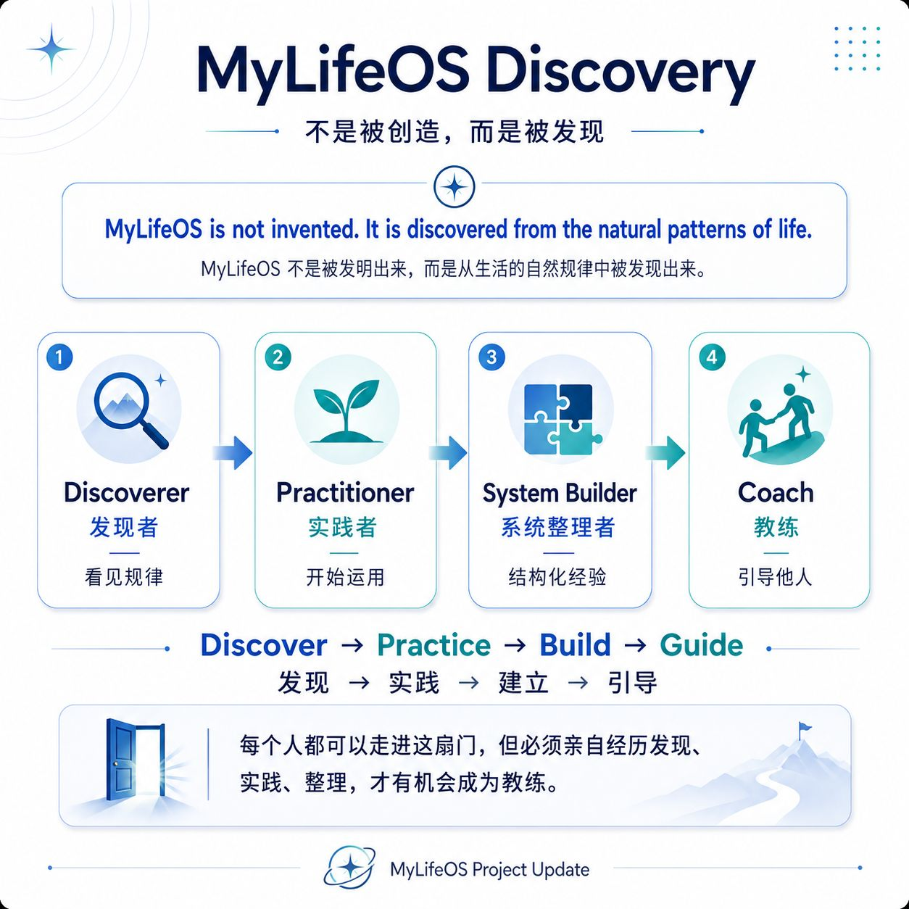

BOOK 6 · 1 / 12
序章 未来，也包含怎样生活今天
走过前五本，我学着留下人生、理解自己、管理资料、连接生活，再把经验带向成长。最后的问题却不只剩下：怎样继续进步？
我也开始问：我想怎样生活？
未来不是为了有一天终于可以生活。创造未来，本身就应该包含如何生活今天。那个努力成为更好自己的 Charles，也值得在现在被照顾、被珍惜。
Book 6 保留 Future Self 的方向，同时回到 LIVE BETTER：创造、体验、分享、学习与持续变化。前五本提供的方法，最后都要服务这个正在生活的人。
BOOK 6 · 2 / 12
第一章 CREATE｜创造我要成为的人
PART I — CREATE｜创造
Who do I want to become? 我希望成为怎样的人，过怎样的生活，怎样使用时间、能力、财富与生命？
收入、职位与身体目标可以帮助聚焦，但它们不能代替这些问题。我希望未来的自己更有能力，也更懂得珍惜关系、承认限度，保留认真生活的空间。

图中的 Discover → Practice → Build → Guide，是我理解来路的四个路标。接下来加上 Create：用已经认识的自己，主动选择下一段人生。
MyLifeOS is discovered. My Future Self is created. MyLifeOS 是从人生中被发现的，而未来的自己，需要由我创造。
创造不是能够控制所有结果。我能决定一些行动，也会遇到现实的变化。方向因此需要留下修正的空间。
BOOK 6 · 3 / 12
第二章 从愿景，走到今天的选择
未来的样子，需要在日常里有位置。我可以先说清想保留什么、想改变什么，再选一个现在能够实行的小行动。
例如，一个练习情境是：希望未来更有精力，就先给本周的恢复留一个时段。尝试以后记录实际状态，再看看安排是否合适。愿景不必一次变成庞大的计划。
我也会问这个目标正在要求我付出什么。它是否挤掉了重要的陪伴，是否让每一天都变成等待未来的准备？如果是，就需要重新安排。
成长可以带着当下发生。今天的一次选择，既能照顾现在的我，也能为明天创造条件。
BOOK 6 · 4 / 12
第三章 LIVE｜不要为了未来，错过现在
PART II — LIVE｜活在当下
I do not need to finish my life before I start living it. 我不需要把人生的目标全部完成，才开始生活。
财富还没有到达目标，事业仍然变化，孩子还在成长，身体也不可能永远处于理想状态。眼前的日子仍然是真正的人生。
Present + Future。我一边创造明天，也一边认真活今天。休息、陪伴、游泳或一段安静的时间，可以有自己的价值，无须先证明它们带来了多少成果。
珍惜自己不是放下全部责任。我仍然沟通承诺、安排资源、接受取舍，也允许自己在普通的一天里感到满足。
未来的 Charles 不只是更成功，也应该更懂得珍惜自己的人生。这件事，从今天就可以开始。
BOOK 6 · 5 / 12
第四章 EXPERIENCE｜把人生真正活出来
PART III — EXPERIENCE｜体验
Enjoy → Experience → Understand → Taste。享受一个时刻，亲自体验，再慢慢理解自己喜欢什么、在意什么。
我把这些经历带来的记忆、理解与关系，称为 Experience Capital｜体验资本。这是一个观察生活的比喻，不是可以像财务资产一样计算回报的账户。
Financial Capital + Experience Capital。钱可以帮助保留未来的安全感，也可以支持时间、健康、体验和共同记忆。节省与花费，都需要放回自己的现实处境。
一个选择可以先问：我承担得起吗？它回应什么需要？会不会挤掉更重要的承诺？我是否真的想经历它？
“这个选择有没有真正增加我的人生？”可以帮助我思考，但答案不必是昂贵的旅行或消费。一场散步、一顿认真吃的饭、一次有时间听完的谈话，同样可以丰富生活。
BOOK 6 · 6 / 12
第五章 ENOUGH｜知道什么时候已经足够
PART IV — ENOUGH｜足够
Future Self 不需要成为一个永远不满意的人。提升有方向，满足也应该有位置。
I can afford it.
I choose it consciously.
I enjoy it fully.
I don’t need it to prove who I am.
我承担得起，有意识地选择，认真享受，也不需要用它证明自己的身份。这四句话帮助我区分喜欢一种体验，与追赶别人的评价。
Choice + Awareness + Appreciation + Enough。足够不是以后再也不能改变，而是此刻知道自己为什么选择，也允许已经拥有的东西带来满足。
我可以继续成长，同时说：这一刻已经很好。系统应该容得下这句话。
BOOK 6 · 7 / 12
第六章 SHARE & CONNECT｜从我的生活，到共享的经验
PART V — SHARE & CONNECT｜分享与连接
当我认真经历一些事情，与世界交谈的入口就可能变多。食物、旅行、设计、天然石、AI、健康、家庭与工作，都可以成为 Connection Points。
Life → Experience → Sharing → Connection → Trust → Opportunity。这条链描述一种可能的发展，不保证分享就会得到信任或商业机会。
工作里的长期关系，有时也包含兴趣、经验与对判断的理解。分享可以让别人认识我，但谈话仍然需要尊重对方，允许它只是一段交流。
How I live eventually becomes part of what I can offer. 我怎样生活，会慢慢影响我能够带给别人的东西。
From My Life to Shared Life。MyLifeOS Begins With Me, But It Does Not End With Me. 这里不建立另一套 OurLifeOS；每个人仍有自己的生活与选择，经验则可以互相丰富。
BOOK 6 · 8 / 12
第七章 SHARE & LEARN｜我分享，也允许别人改变我
PART VI — SHARE & LEARN｜分享与学习
This worked for me. What worked for you? 这对我有帮助，你的经验又是什么？
分享以后，我也要听。对方的处境可能与我不同，也可能让我看见自己的盲点。Your experience may reveal my blind spot.
Share → Listen → Compare → Learn → Adjust。先理解对方的情境，再比较相似与不同，最后决定哪些经验适合自己尝试。
我不需要因为整理出一套方法，就在每次交流里成为教别人答案的人。愿意被补充、被纠正，是方法继续有生命的一部分。
分享不要求公开所有资料。家人的记忆、工作细节和个人感受，都可以选择合适的范围。把故事讲清楚，也包含尊重故事里的人。
BOOK 6 · 9 / 12
第八章 EVOLVE｜未来的自己，从来不是固定版本
PART VII — EVOLVE｜持续变化
Future Self is not a destination. It is a direction that keeps evolving with life.
人会老，孩子会长大，身体、事业、兴趣与世界都会变化。曾经合适的目标，到了另一个阶段可能需要重新选择。
回顾帮助我保留这种权利。我可以问：什么仍然重要？什么已经改变？这次应该继续、调整，还是暂缓？
重新选择不必否定过去。当时的决定服务当时的生活，今天的资料帮助今天作判断。未来因此可以有连续性，也可以有新的样子。
Live Better is not a destination. It is a living cycle. 活得更好，是在变化中持续理解与选择的过程。
BOOK 6 · 10 / 12
第九章 LIVE BETTER｜一个继续发生的循环
Enjoy → Experience → Understand → Share → Connect → Learn → Evolve → Live Better ↻
活得更好又带来新的体验。这不是八项每天必须完成的工作，也不要求每次经历都走完全部步骤。它是理解生活怎样继续丰富自己的一个方向。
六本书也回到这条路上：LOVE，珍惜人生；UNDERSTAND，认识自己；MANAGE，记录与回顾；SYSTEMIZE，连接生活；IMPROVE，学习成长；LIVE BETTER，创造、体验、分享与变化。
我从“How can I improve my life?”，继续走向“How do I want to live my life?”。改进方法有价值，更重要的是知道这些方法要帮助我过怎样的生活。
当循环越来越自然，我不需要不断增加新的模型。先认真过一天，让需要回看的事情留下来，再决定接下来怎样生活。
BOOK 6 · 11 / 12
第十章 THE SYSTEM DISAPPEARS｜系统退到生活背后
最好的生活系统，应该逐渐减少我对维护它的注意。记录成为觉察，Review 成为反思，健康进入日常，财富进入判断，关系成为珍惜，学习成为习惯，未来成为今天的选择。
这是我希望靠近的状态，不代表自己已经永远做到。工具仍然存在，忙碌时也可能需要重新整理。所谓“消失”，是系统退到生活背后，帮助我时出现，不再占据全部注意力。
I no longer live inside MyLifeOS. MyLifeOS lives inside me.
System disappears. Life remains.
我不再需要每天证明自己正在操作一个系统。我需要的是，眼前的生活有更多清楚、珍惜、体验与选择。六本书走到这里，目的终于回到最初那个正在生活的人。
BOOK 6 · 12 / 12
尾声 Live Better
I once built MyLifeOS because I wanted to manage my life better.
Along the way, I learned to observe it, understand it, review it and improve it.
Eventually, I realized that life was never meant to become a perfect system.
The system was only here to help me return to life.
To enjoy.
To experience.
To love.
To connect.
To share.
To learn.
To keep becoming.
MyLifeOS began with a simple question: How am I living?
And perhaps it ends with another: How do I want to live from here?
我曾为了更好地管理人生建立 MyLifeOS。一路上，我学习观察、理解、回顾与调整。最后才明白，人生无需成为一个完美系统；系统只是帮助我回到生活。
去享受、体验、爱、连接、分享、学习，继续成为自己。接下来，我想怎样生活？
Create your future.
Live your present.
Share your experience.
Keep evolving.
Live Better.